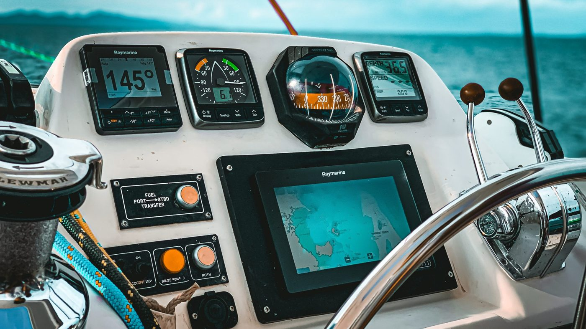
دورة تشغيل وصيانة وفك وتركيب
الأجهزة الملاحية على القوارب السريعة
VHF · GPS · ECHO SOUNDER · NOKIA · RADAR — الفصل الثاني: جهاز الـ GPS
ماذا ستستفيد من هذا الفصل؟
بنهاية هذا الفصل ستكون قادرًا على:
- ✓تشرح كيف يعرف الجهاز موقعك من أقمار على بعد ٢٠ ألف كمالأقمار، قياس الزمن، ولماذا أربعة أقمار
- ✓تقرأ الإحداثيات وتبلّغها بالراديو بلا خطأخط العرض والطول، الصيغة البحرية، والدَاتُم
- ✓تعرف أجزاء الجهاز ونوعيه عندناالمدمج في شاشة 3 in 1 والخارجي المستقل
- ✓تستخدم أهم وظائفه وتربطه بالأجهزة الأخرىMOB · نقاط الطريق · الأثر · الربط بالـ VHF
- ✓تركّبه وتفكّه وتشخّص أعطاله٩ خطوات تركيب، ٦ خطوات فك، وأشهر ستة أعطال
مسارنا اليوم — سبع محطات:
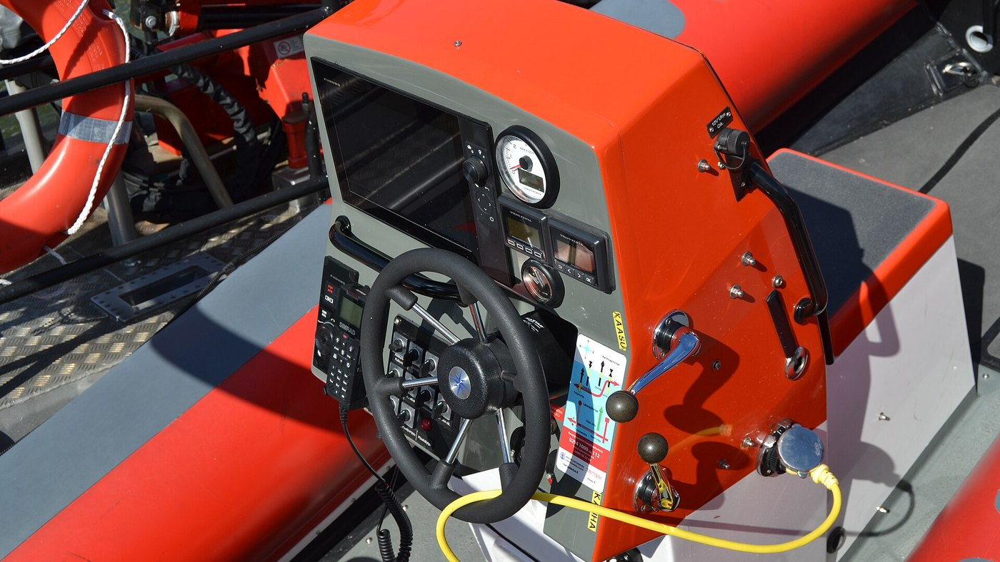
ما هو الـ GPS؟
التعريف، مكونات النظام الثلاثة، والاستخدامات
ما هو الـ GPS؟
المذكرةنظام ملاحة عالمي يعتمد على أقمار صناعية لتحديد الموقع والسرعة والوقت بدقة في أي مكان على الأرض — في البر والبحر والجو، على مدار الساعة، وبدون إنترنت.
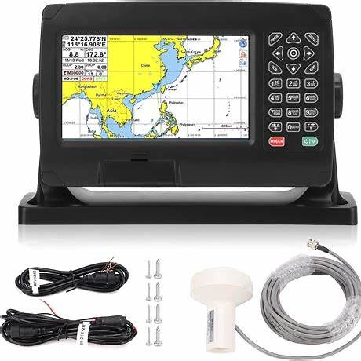
مكونات نظام الـ GPS الثلاثة
المذكرة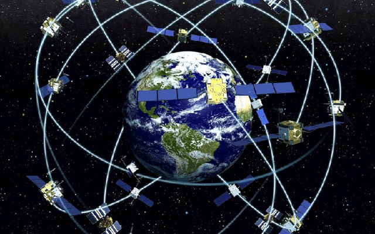
١ · الأقمار الصناعية
٢٤ قمرًا حدًا أدنى والفعلي نحو ٣١، على ارتفاع 20,200 كم. كل قمر يبث باستمرار: موقعه + الوقت الدقيق بساعة ذرية.
٢ · محطات التحكم الأرضية
محطات موزعة حول العالم تراقب الأقمار، تصحّح بياناتها (الموقع والوقت) وترسل لها التحديثات باستمرار.
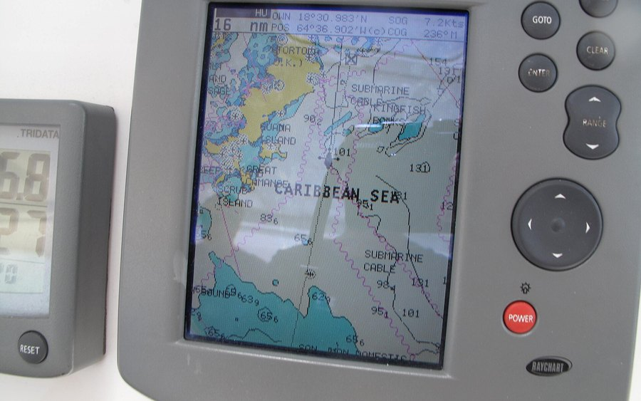
٣ · أجهزة الاستقبال
الجهاز عندك — في الزورق أو السيارة أو الهاتف. يلتقط الإشارات ويحسب: الموقع · السرعة · الاتجاه · الوقت. وهذا ما يهمنا.
الاستخدامات — وأهميته لخفر السواحل
المذكرة- 🆘الإنقاذ البحريتحديد مواقع الاستغاثة والوصول للمنكوبين بسرعة.
- 📋توثيق مسارات الدورياتالأثر المحفوظ يُستخدم في التقارير الرسمية والتحقيقات.
- 🛡️العمليات الأمنية وحماية الحدودكشف التهريب والتسلل وتنسيق المطاردة — بربطه مع الرادار.
- 💡ليس مجرد «أين أنا»بدمجه مع الرادار والـ VHF والـ AIS يصير قلب المنظومة الملاحية.
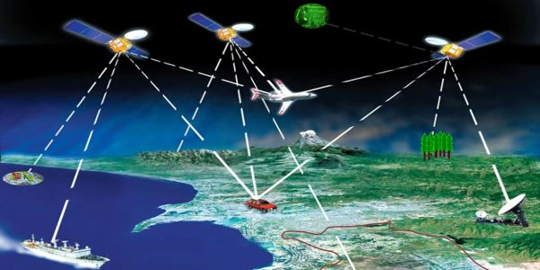
كيف يحدد موقعك؟
قياس الزمن ← مسافة ← تقاطع — ولماذا نحتاج أربعة أقمار
كيف يحدد موقعك؟ — جرّبها
المذكرةكل قمر يقول للجهاز: «أنت على بُعد كذا مني» — يعني أنت في مكان ما على دائرة حولي.
- ١قمر واحددائرة كاملة — احتمالات لا تنتهي.
- ٢قمرانالدائرتان تتقاطعان في نقطتين.
- ٣ثلاثةنقطة واحدة — لكنها تقريبية لأن ساعة الجهاز غير دقيقة.
- ٤الرابع يصحّح الساعةفيصير الموقع دقيقًا وموثوقًا. أربعة = الحد الأدنى.
من الزمن إلى المسافة — ولماذا القمر الرابع؟
المذكرة- ١القمر يبث:موقعه + وقت خروج الإشارة بالضبط (ساعة ذرية).
- ٢الجهاز يقيس الزمنكم استغرقت الإشارة حتى وصلت.
- ٣الزمن × سرعة الضوء = المسافةنفس فكرة الرادار — لكن هنا ذهاب فقط، فلا نقسم على ٢.
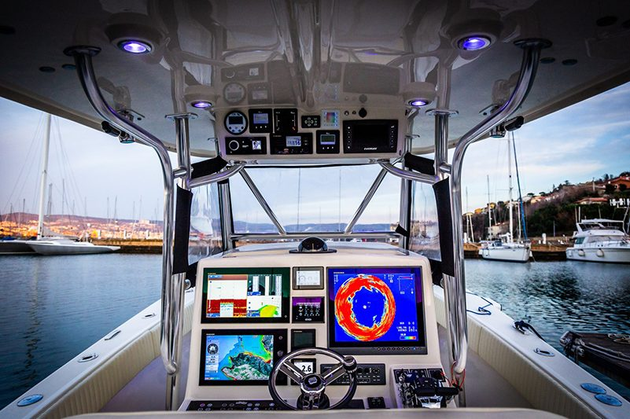
الإحداثيات — عنوانك في البحر
خط العرض وخط الطول · الصيغ الثلاث · الدَاتُم
الإحداثيات: خط العرض وخط الطول
المذكرةالإحداثيات أرقام تحدد أي نقطة على الأرض — مثل عنوان البيت، لكنه عالمي ويشتغل في عرض البحر.
- ↕خط العرض (Latitude)كم تبعد شمال (N) أو جنوب (S) خط الاستواء — من 0° إلى 90°.
- ↔خط الطول (Longitude)كم تبعد شرق (E) أو غرب (W) خط غرينتش — من 0° إلى 180°.
القاعدة: العرض أولًا ثم الطول — وعندنا دائمًا N و E.
صيغ الإحداثيات — وكيف تبلّغها بالراديو
إضافة⚠️ الخطأ القاتل
22.5′ دقيقة ليست ٢٢ دقيقة و٥٠ ثانية — هي ٢٢ دقيقة و٣٠ ثانية. الخلط بين الصيغ = الإنقاذ يروح لمكان ثانٍ.
الدَاتُم (Datum) — لماذا WGS84؟
إضافةالجهاز يحسب موقعك على نموذج رياضي لشكل الأرض اسمه الدَاتُم. والخريطة مرسومة على نموذج أيضًا — لازم الاثنان يتطابقان.
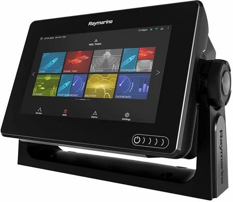
الجهاز وأنواعه
الشاشة · الهوائي · الكيبلات · الكروت — والمدمج مقابل المستقل
أجزاء جهاز الـ GPS
المذكرة — العملي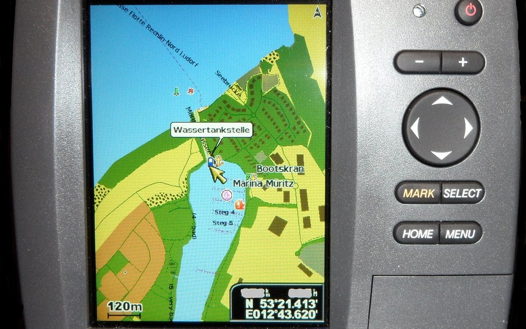
الشاشة Display
واجهة العرض: شاشة LCD للجهاز المستقل، أو شاشة 3 in 1 المشتركة.
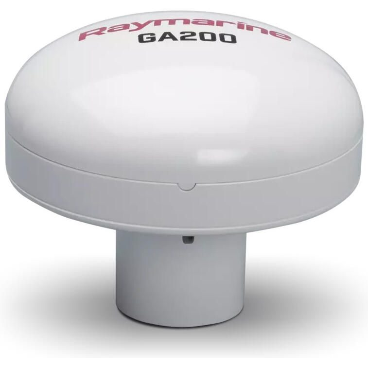
الهوائي Antenna
يستقبل إشارات الأقمار. أهم جزء — أغلب الأعطال منه أو من كيبله.
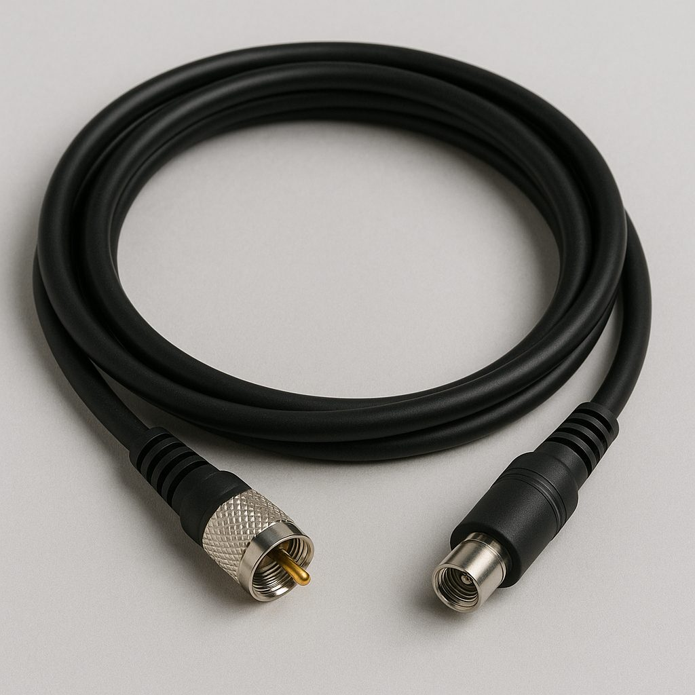
الكيبلات ٣ أنواع
الطاقة (12/24 V) · الهوائي (Coaxial — لا يُثنى بحدة) · البيانات (NMEA — للربط بالـ VHF والرادار).
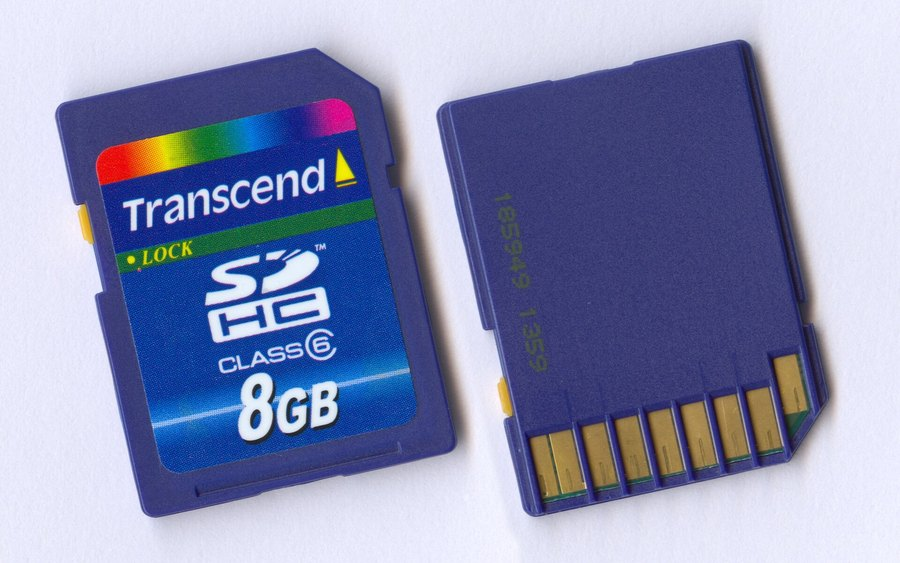
الذاكرة والكروت
ذاكرة داخلية + كرت ذاكرة + كرت خرائط. التحديث عبر الكرت لأنه لا إنترنت بالدورية — لا تضيّعهما.
الهوائي — داخلي وخارجي
المذكرة — العملي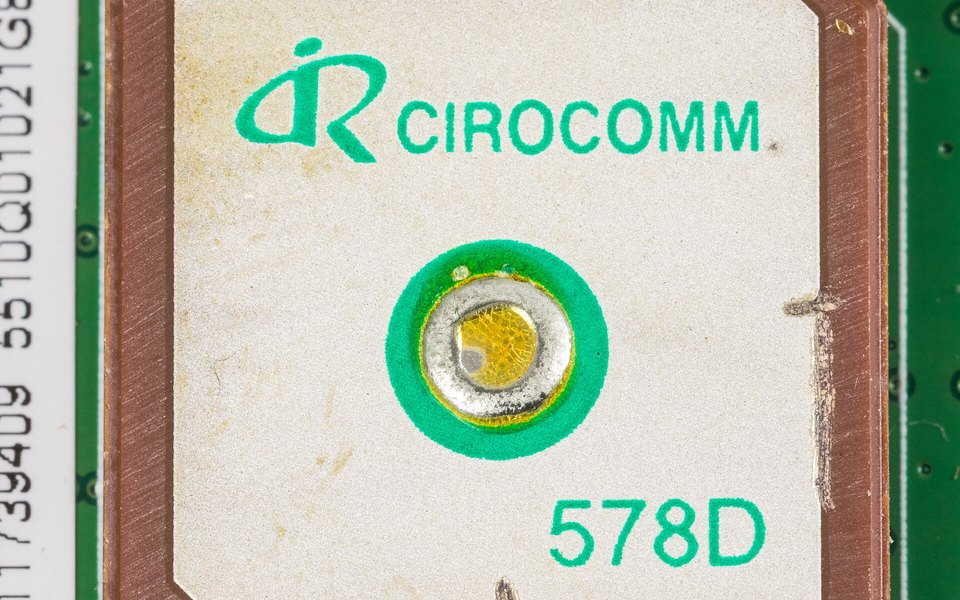
نوعا الـ GPS عندنا: المدمج والمستقل
المذكرة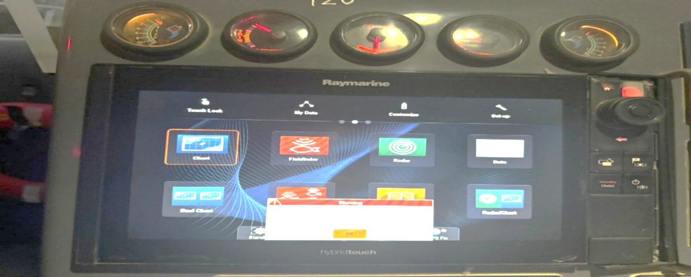
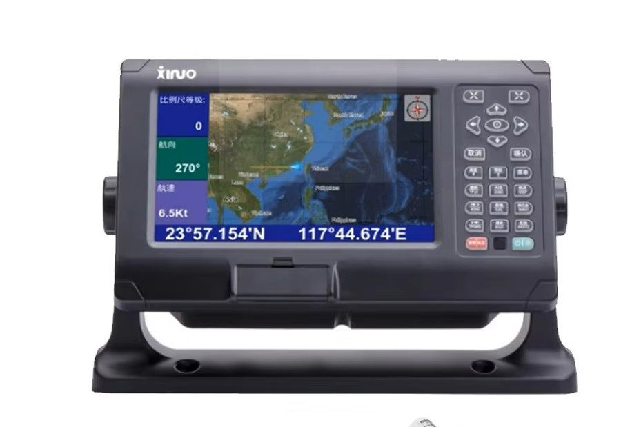
| وجه المقارنة | المدمج 3 in 1 | المستقل |
|---|---|---|
| المساحة | شاشة واحدة لثلاثة أجهزة | شاشة إضافية |
| الربط | تلقائي داخل الشاشة | كيبل NMEA لكل جهاز |
| عند العطل | تتعطل الثلاثة معًا | يبقى يعمل — احتياط |
| الهوائي | داخلي غالبًا | خارجي أعلى الدورية |
| التبديل | أصعب وأغلى | أسهل وأرخص |
الدقة وحدودها
كم دقته؟ ما الذي يؤثر فعلًا — وما الذي لا يؤثر؟
كم دقته؟ — شاشة الأقمار و HDOP
المذكرة + إضافةالأجهزة المدنية دقتها نحو ٣–٥ أمتار في الظروف العادية — تكفي للملاحة، لكنها ما تفرّق بين رصيفين متجاورين.
- ▸HDOPرقم يقيس جودة توزيع الأقمار: أقل من ٢ ممتاز · ٢–٥ مقبول · فوق ٥ ضعيف.
- ▸أقمار أكثر ومتوزعة = دقة أعلىجرّب المنزلق وشوف دائرة الخطأ.
- ▸العدد وحده ما يكفيأقمار كثيرة متكتلة بجهة واحدة (مبنى يحجب الباقي) = HDOP سيئ. اضغط «كتّلها بجهة».
ما الذي يؤثر على الـ GPS — وما الذي لا يؤثر؟
تصحيحيؤثر فعلًا
- سقف معدني أو جسم فوق الهوائي
- قلة الأقمار المرئية (بين مبانٍ أو جبال)
- كيبل هوائي مثني أو مقطوع أو موصله مبلول
- التشويش المتعمّد (Jamming / Spoofing)
- إعداد الدَاتُم الخاطئ (انزياح على الخريطة)
لا يؤثر عمليًا
- المطر والعواصف والغيوم
- الليل والنهار
- عدم وجود إنترنت أو شبكة جوال
- البحر المفتوح — بل هو أفضل بيئة (سماء مكشوفة)
- سرعة الزورق
GPS مقابل DGPS (التفاضلي)
المذكرة — مصحّح| العنصر | GPS | DGPS |
|---|---|---|
| المكونات | أقمار + مستقبل | + محطة أرضية + قناة تصحيح |
| الدقة | نحو ٣–٥ م | نحو ١–٣ م |
| الاستخدام | الملاحة العامة | الموانئ والمنارات والمسح — مدني |
| التكلفة | أرخص | أغلى + خدمة تصحيح |
| إشارة إضافية؟ | لا | نعم (راديو أو قمر SBAS) |
مميزات الـ GPS وحدوده
المذكرةالمميزات
- دقة بضعة أمتار في أي مكان بالعالم
- يعمل ٢٤ ساعة بلا إنترنت ولا اشتراك
- معلومات لحظية: الموقع · السرعة · الاتجاه
- يعمل مع الخرائط الرقمية والأجهزة الأخرى
- يقلل أخطاء الملاحة والحوادث
الحدود
- تضعف الإشارة تحت أي غطاء (سقف معدني، أنفاق)
- دقته أمتار — لا يفرّق بين رصيفين متجاورين
- قابل للتشويش والخداع
- الاعتماد الكلي عليه ونسيان الخريطة والبوصلة والمعالم
التشغيل والربط
وظائف المشغّل اليومية · زر MOB · الربط بالـ VHF والرادار · التشويش
وظائف المشغّل اليومية
إضافةشاشة الموقع
الإحداثيات + SOG السرعة الفعلية + COG اتجاه الحركة الفعلي (قد يختلف عن اتجاه المقدمة بسبب التيار).
نقطة الطريق Waypoint
موقع تحفظه بضغطة (مرسى، عوّامة، موقع بلاغ) ثم «اذهب إليه» — يعطيك الاتجاه والمسافة والوقت.
المسار Route
سلسلة نقاط طريق متتالية — من الميناء لمنطقة الدورية والعودة.
الأثر Track
خط يرسمه الجهاز أينما تحركت — به تُوثَّق مسارات الدوريات للتقارير والتحقيقات.
زر MOB — رجل في البحر
إضافةعند سقوط شخص في البحر تضغطه فورًا: الجهاز يحفظ الموقع بالضبط ويوجّهك للرجوع إليه.
الربط بالأجهزة الأخرى — NMEA
المذكرة + إضافةالأجهزة البحرية تتخاطب بلغة مشتركة اسمها NMEA (0183 القديمة بأسلاك، و2000 الحديثة بشبكة).
- 📻VHF-DSCزر الاستغاثة يبث موقعك تلقائيًا — بشرط الكيبل موصول.
- 📡الرادار و AISالأهداف على الخريطة بإحداثيات حقيقية، وهويتك وموقعك تُبث للسفن.
التشويش والانتحال (Jamming / Spoofing)
إضافة — توعيةالتشويش Jamming
إشارة الـ GPS ضعيفة جدًا عند وصولها للأرض، فيسهل إغراقها: الموقع يختفي وكل الأقمار تروح فجأة.
الانتحال Spoofing
إشارة مزيفة تخدع الجهاز فيعرض موقعًا خاطئًا بثقة تامة — وهذا الأخطر لأنه ما يبين.
علامات تشك فيها
موقعك على اليابسة أو مطار · سرعة مستحيلة · قفزة مفاجئة · فقدان كل الأقمار في يوم صافٍ.
المشغّل
- لا يثق بالـ GPS وحده — يرجع للرادار والبوصلة والمعالم
- يبلّغ العمليات بالوقت والمكان ويسجّل الملاحظة
الفني
- لا يفكّ ولا يستبدل مباشرة
- يتأكد أن الجهاز يعود للعمل بعد الابتعاد عن المنطقة
الجزء العملي
التركيب · الفك والصيانة · الأعطال الشائعة · فحص قبل الإبحار
تركيب جهاز الـ GPS — ٩ خطوات
المذكرة — العملي- ١اختيار الموقعالشاشة قرب القيادة بعيدًا عن الماء · الهوائي أعلى نقطة مكشوفة.
- ٢تثبيت وحدة العرضبالقاعدة والبراغي — ما تتحرك مع الإبحار.
- ٣تثبيت الهوائيبعيدًا عن المعدن وعن هوائيي الرادار والـ VHF.
- ٤كيبل الهوائيمن الهوائي للشاشة — بلا ثني حاد.
- ٥كيبل الطاقة12/24 V · أحمر موجب · أسود سالب · بفيوز.
- ٦الأجهزة الأخرىكيبل NMEA للـ VHF والرادار حسب دليل الجهاز.
- ٧اختبار التشغيلاستقبال الأقمار وصحة الموقع — أول مرة تأخذ دقائق.
- ٨ضبط الإعداداتWGS84 · درجات ودقائق · ميل بحري · الوقت · الخرائط.
- ٩الحماية والصيانةالتوصيلات محمية من الماء + فحص دوري للكيبلات.
فك وصيانة جهاز الـ GPS
المذكرة — العمليإطفاء الجهاز
أوقف التشغيل وافصل أي مصدر طاقة خارجي.
فك الهوائي والكيبلات
أزل كل الكيبلات — وصوّرها قبل الفك ليسهل التركيب.
فك البراغي الخارجية
في الخلف أو الجوانب — واحرص ألا تسقط داخل الديكور أو تضيع.
فتح الغلاف الخارجي
بأداة مسطحة برفق — وانتبه للمشابك الصغيرة فهي تنكسر بسهولة.
تنظيف المكونات
فرشاة صغيرة للأتربة — لا ماء ولا مواد كيميائية قوية.
إعادة التركيب
بالترتيب العكسي — تأكد من الكيبلات وشدّ البراغي.
الأعطال الشائعة — أعطال الموقع
إضافة — الصيانة١ · «لا يوجد موقع» بعد التشغيل مباشرة
السبب المحتمل: إقلاع بارد — مو عطل.
أول شيء تفحصه: انتظر ٥–١٥ دقيقة والزورق في مكان مكشوف.
٢ · لا موقع حتى بعد الانتظار
السبب المحتمل: هوائي مغطّى، أو كيبل مقطوع/مثني، أو موصل مبلول.
أول شيء تفحصه: شاشة الأقمار ← الموصلان ← الكيبل بطوله.
٣ · الموقع يقفز وأنت راسٍ
السبب المحتمل: أقمار قليلة، أو HDOP مرتفع، أو تشويش.
أول شيء تفحصه: شاشة الأقمار: العدد و HDOP.
الأعطال الشائعة — الخريطة والربط
إضافة — الصيانة٤ · الموقع منزاح عن الخريطة
السبب المحتمل: إعداد الدَاتُم غير WGS84.
أول شيء تفحصه: الإعدادات ← Datum ← WGS84.
٥ · الخرائط لا تظهر
السبب المحتمل: كرت الخرائط غير مثبت أو تالف.
أول شيء تفحصه: أعد تركيبه ← جرّب كرتًا آخر ← حدّث.
٦ · الـ VHF يقول «لا موقع GPS»
السبب المحتمل: كيبل NMEA مفصول أو المخرج مغلق.
أول شيء تفحصه: إعداد NMEA Output + التوصيلة عند الجهازين.
قائمة فحص الـ GPS قبل الإبحار
٠ / ١٠- ✓الجهاز يعمل والشاشة واضحةبلا رسائل خطأ
- ✓عدد الأقمار٤ فأكثر — والأفضل ٨+
- ✓قيمة HDOPأقل من ٢
- ✓الموقع على الخريطةيطابق مكان الرصيف فعلًا
- ✓الوقت والتاريخصحيحان
- ✓الإعداداتWGS84 · درجات ودقائق · ميل بحري
- ✓زر MOBكل فرد يعرف مكانه
- ✓الربط بالـ VHFالراديو يعرض الموقع
- ✓كرت الخرائطمثبت والخرائط تظهر
- ✓الهوائي والكيبلمكشوف، والموصل جاف ومحكم
راجع معي — المبدأ والإحداثيات
راجع معي — الجهاز والتشغيل
المحطات السبع — أين وصلنا:
شكرًا لكم
أسئلتكم؟
الفصل التالي: جهاز الرادار (Radar)